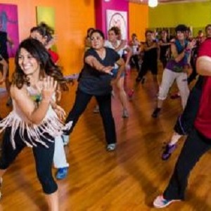

|
At aerobic the choreography contains twists and turns and all steps as well as movements are thoroughly built from scratch. During the hour you will be challenged on your fitness and coordination in a team room filled with energy and exercise joy.
|
 |
Dance is for those who love to dance to “Clubbing” inspired music such as up tempo Pop, House, Dancehall and Hip-Hop. For Dance you get the opportunity to give that gas with cool dance steps to good music while burning lots of calories. The lesson is built up by various dance steps, which are put together for small choreographies. For DanceFit you will dance different styles such as. House, Waacking, Hip hop and Dancehall. There are few breaks for DanceFit, so you get an hour of high intensity and high energy from start to finish. Our motivational instructors are ready to guide you through an hour of dance parties with smiles on your lips and sweat on your forehead.
|
|  |
Zumba Zumba® includes dance steps and steps inspired by our trainers, so you also get trained legs, balls, abdomen and arms. For Zumba®, you get your heart rate up, burn a lot of calories and get an effective workout - all with a smile on your lips. |